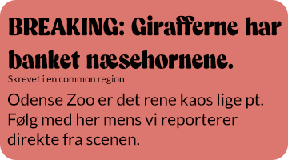

En common region laver en klar og tydelig struktur, som hjælper brugerne hurtigt og effektivt med at forstå forholdene elementerne og sektionerne. Ved at enten tilføje en kant rundt om ens element/ gruppe af elementer eller en baggrundsfarve bag på, så vil det blive set som én gruppering.
